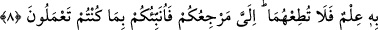

menfaati, görünürde her ne kadar başkasına âid gibi olsa da sonuç itibarıyla kendisine
döner.
Sahih-i Müslim’de Ebû Hüreyre (r.a)’dan rivâyet edilen bir hadîs-i kudsîde Allah
Teâlâ der ki: “Ey Âdemoğlu! Ben hastalandım, beni ziyaret etmedin.” Kul der ki: “Ya
Rabbi! Ben, seni nasıl ziyaret edebilirim, sen âlemlerin Rabbisin.” Allah Teâlâ
buyurur ki: Bilmedin mi? Falan kulum hastlanmıştı da onu ziyaret etmemiştin. Bilmez
misin ki, onu ziyâret etseydin, Beni onun yanında bulurdun.
“Ey Âdemoğlu! Senden yemek istedim, bana yedirmedin.” Kul der ki: “Ya Rabbi!
Ben sana nasıl yedireyim, sen âlemlerin Rabbisin.” Allah Teâlâ buyurur ki:
“Bilmiyormusun, falan kulum senden yemek istemişti, sen de ona yedirmemiştin.
Bilmedin mi ki, ona yedirseydin onu benim yanımda bulurdun.”
“Ey Âdemoğlu! Senden su istedim, bana su vermedin” Kul der ki: “Ya Rabbi! Sana
nasıl su verebilirim, sen âlemlerin Rabbisin.” Allah Teâlâ buyurur ki: “Benim falan
kulum, senden su istemişti, sen de ona vermemiştin. Şayet ona su verseydin, onu
benim yanımda bulurdun.”[160]
Allah dostlarından biri şöyle anlatır: Hac yolunda idim. Kâfilenin önüne siyah bir
yılan çıkmıştı. Yolun enine yatıp ağzını açmış ve insanların yoldan geçmesine mâni
oluyordu. Bir su kırbası alıp kılıcımı da kınından çıkararak ön tarafa geçtim. Kırbanın
ağzını yılanın ağzına koydum. Yılan suyu içtikten sonra kaybolup gitti. Haccımı
tamamlayıp kâfile ile aynı yerden geçerken beni bir uyku bastı. Kafile gitmişti. Ben
yapayalnız ve şaşkın bir vaziyette kalmıştım. O anda önümde devemin yanında bir deve
durduğunu gördüm. Bana: “Kalk ve üzerime bin!” dedi. Ben de bindim, devemi de
(yularından) tuttum. Seher vakti idi. Kafileye yetişince bana üzerinden inmemi işâret
etti. Ben: “Seni yaratan Allah için soruyorum, sen kimsin?” dedim. Dedi ki: “Ben,
kafilenin önünde, yolun enine yatan o siyah yılanım. Sen benim ihtiyacımı gidermiştin.
Şimdi ben de senin ihtiyacını giderdim. İyiliğin karşılığı ancak iyiliktir.
Şeyh Sâdî der ki:
İhsanla bir gönlü sevindirmek, huzura erdirmek
Her bir konakta bin rekat namaz kılmaktan yeğdir
Allah dileyip inâyet etmemiş olsa,
Bir kul başkasına nasıl iyilik edebilir?
İnsanda ne gam kalır ne de mutluluk
Bil ki sadece amel kalır, bir de iyi bir ad.